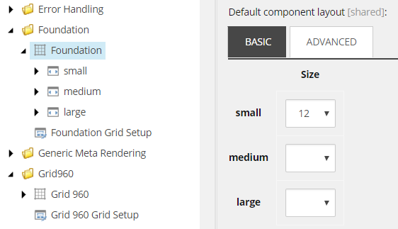

The grid settings
The SXA grid definition, its settings, and classes.
A grid system is a library of HTML/CSS components that let you structure a website easily. Grid systems help you create responsive websites that have consistent designs and ensure cross-browser support. Understanding how the SXA grid layout works can help you use and change grid settings, and add classes.
Grid systems in XM Cloud
By default, when you create a site in XM Cloud, it comes with Bootstrap 5, which is a responsive, mobile-first system with jsDelivr, auto margins, and a template starter page. Its default devices are:
Mobile
Mobile landscape
Tablet portrait
Desktop small
Desktop regular
Desktop large
There is also a set of built-in items for other grid systems that you can use, for example, Bootstrap 4, Tailwind, and Foundation.
Changing the grid system after you create your site requires many manual changes. Because of the references on your pages to the previous grid system, making a change to the grid system will break your layout.
All grid systems have different system rules, classes, and options. For more detailed information, refer to the documentation of the different grid systems.
Settings for the grid definition and grid setup items
Grid systems are stored as a feature in Sitecore (sitecore/System/Settings/Feature/) and include:
The Grid Definition item – includes all grid system specific settings, the devices, and their classes that a content author can use in the Experience Editor and Pages applications.
The Grid Setup item – for setting up modules for the scaffolding, including specifying dependencies.
The following fields are included in the Grid Definition item:
Field | Description |
|---|---|
Name | The name of the grid system as you want it to display in the site creation wizard. |
Rendering parameters field type | Determines the way the grid parameters are rendered. The default field renderer is:
|
Default component layout | Sets the default column size for renderings that you drag on the page. You can set a value for different types of devices. The value specifies the number of columns. |
Grid theme | Links to the theme used for the grid. |
Grid field parser type | Determines the parser type to parse the grid fields. The default grid field parser type is:
|
Grid body view path | Path to your CSHTML file that defines the body layout of a page. |
Flex | List of CSS classes that determines the way placeholders behave when they are not set to a fixed size. For example, |
Fixed | Set of CSS classes that determines the way placeholders behave when they are fixed. For example, |
Row class | CSS class added to the |
Row container class | CSS class added to the parent |
Wrapping tag | Wraps the NoteDepending on the grid system you are using, this field might already be configured. |
Wrapping class | Assigns a class to the tag specified in the in the Wrapping tag field. NoteDepending on the grid system you are using, this field might already be configured. |
The Grid Setup item includes the following fields:
Field | Description |
|---|---|
Name | The name of the grid system as you want it to display in the site creation wizard. |
Dependencies | Lets you determine the order in which the features are installed. |
Grid definition | Refers to the Grid Definition item. For example, for the Foundation grid system: Settings/Feature/Experience Accelerator/Foundation/Foundation |
You can change the default layout settings of the renderings in the Grid Definition item of the grid system. For example, for the Foundation grid (sitecore/System/Settings/Feature/Experience Accelerator/Foundation):
|  |
The grid classes
The classes defined in the Grid Definition item correspond to the grid system details in the Media Library. For example, in the Experience Editor, you have the option to hide a rendering for visitors using a large desktop.
This option is set in the Display settings of the Bootstrap 5 grid system (sitecore/System/Settings/Feature/Experience Accelerator/Bootstrap 5/Bootstrap 5/Large Desktops/Display/None):
This class is taken from the bootstrap.css file loaded in the Media Library (sitecore/Media Library/Feature/Experience Accelerator):